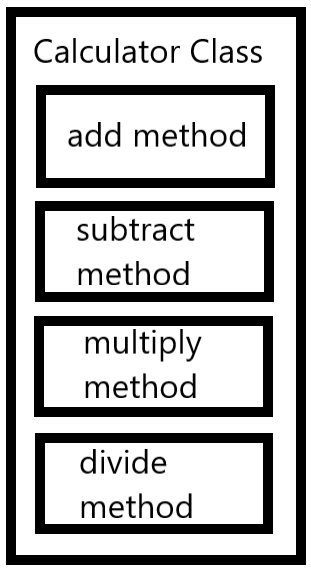
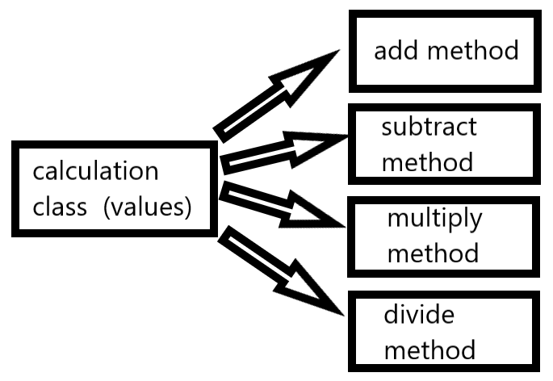
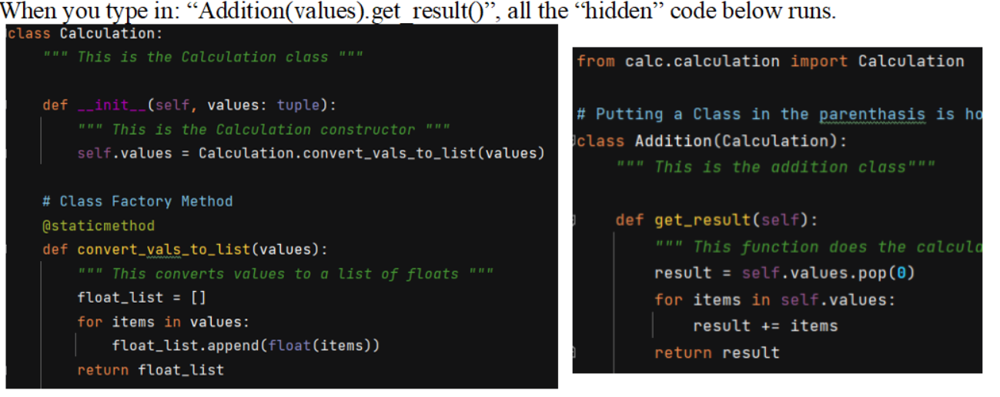

Why SOLID

Picture by Bob Schicke
The SOLID Principal is a way of designing code so that it is expandable, reusable and maintainable. xxxx.
When the SOLID principal is followed, code is easily managed, maintained and expanded. The way this is achieved is to minimize the reliance of one class to another and minimize a methods reliance on other methods or data.
Single Responsibility Principal:

Picture by Bob Schicke
The “S” stands for “Single Responsibility”. This means that a class should contain the methods and data that are required to implement one feature. And a method should contain code to handle a singe aspect of that feature. This way, adding a feature means to add a new function or class, and not adding to a current one which will make the program more complicated and harder to modify or extend. In short it means “DO ONE THING!” In our calculator project, our add method just adds the values. It doesn't print them out, doesn't save them to memory.

Open/Closed Principal:

Picture by Bob Schicke
The “O” stands for the “Open/Closed” principal. This means that a class or method should be Open to extension and closed to modifications. The way to do this is to make parent class, which holds the common data and methods, or could even be an abstract class which has no data or methods. And then the child classes could implement the methods in a custom way to fulfill the feature requirements.
An example of this could be a PayProcessing parent class that has child classes that handle different ways to pay, such as credit, debit, paypal. If a new payment type, such as bitcoin, a separate bitcoin class can be added without affecting the other payment types.
Liskov's Substitution Principal:

Picture by Bob Schicke
The “L” stands for “Liskov's Substitution” principal. This means that a parent class should be able to be substituted with the child class. This means that anything that the parameters passed to the parent class should be compatible with all of the child classes. In our example of the payment system, if one of the payment type child classes requires an account number and another requires an email, that makes the input prompt requirements incompatible. In this case, the input prompt should be handled by the child classes and not the base class.
Interface Segregation Principal:

Picture by Bob Schicke
The “I” stands for “Interface Segregation” principal. In some instances, not every child class needs to implement all of the methods and data structures of an interface. A good example would be an Animal class. Properties like “beak length”, “tail fin size”, “hair color”, “migration distance”, definitely don't apply to all animals. It would make sense to split the Animal interface into sub-interfaces such as “mammals, fish, reptiles, birds”. That way the mammal is only forced to implement the methods and parameters that apply to mammals and not have interface “overload”.
Dependency Inversion Principal:

Picture by Bob Schicke
The “D” in solid stands for “Dependency Inversion” principal. This means that high level methods or classes should not depend on the details about methods or classes they use. Both the high level and low level functions should rely on an abstraction. The abstraction is the language that the functions use to communicate. If a politician's Media class has a direct call to a Twitter Feed class, then it is dependent on Twitter and another news feed is not an option. If the interface was abstracted by a generic call to a “send_message(“I Won!!”)”, then this can be used by any media class that abides by this abstraction.